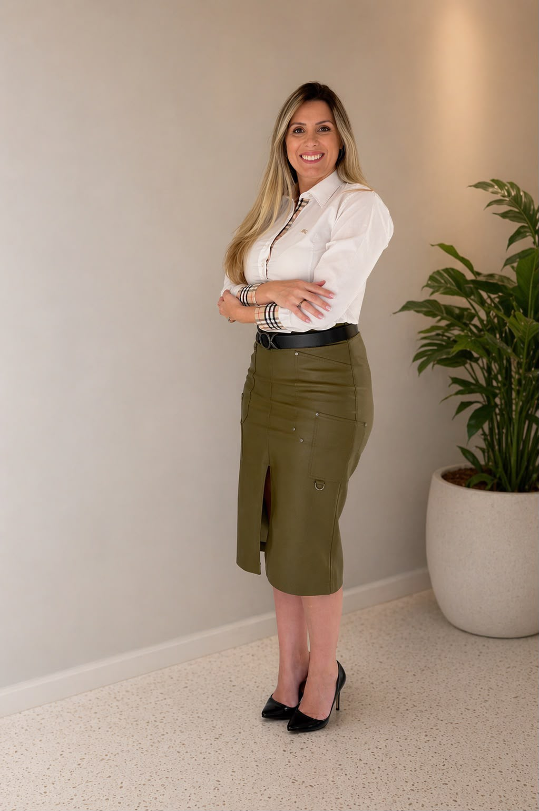
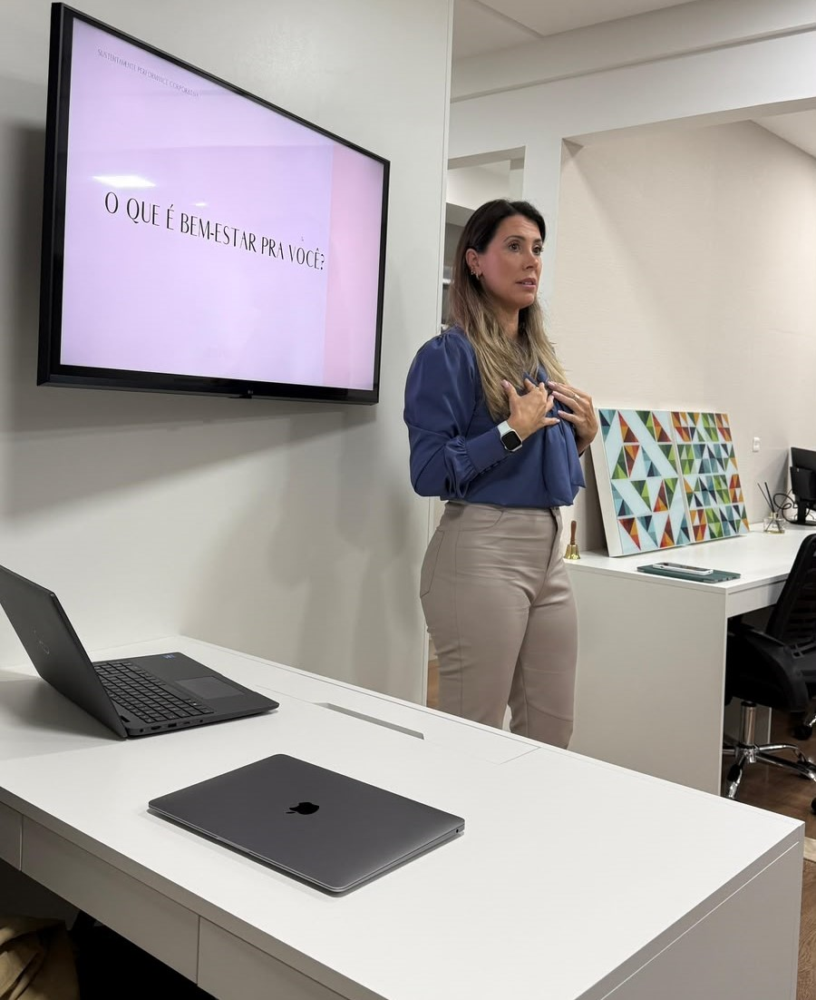

Resultado consistente
depende de gente
inteira.
Sou Andressa Stival. Não é palestra motivacional. É a cultura da sua empresa transformada de dentro pra fora, com método vivido e contínuo.
Conhecer o métodoA pressão que ninguém colocou no orçamento
Sua empresa cresce, as metas sobem a cada trimestre, o mercado exige mais. E quem sustenta esse crescimento carrega uma pressão que nunca entrou numa planilha.
A NR-1 tornou obrigatório mapear riscos psicossociais. Cumprir a norma e cuidar de verdade são coisas diferentes: o board sabe disso.
A saúde emocional do time não é mais pauta de RH. É variável de risco, presente no turnover, na performance e na reputação da empresa.
O que fica invisível até virar crise
Burnout e sobrecarga
Gestão por número, sem escuta, cobra um preço que aparece primeiro na queda de performance, não no atestado.
Lideram no improviso
Sem preparo formal para lidar com pressão e conflito.
Cegueira emocional da empresa
Sem diagnóstico, as disfunções só aparecem quando o custo humano e financeiro já é alto.
Crises sem protocolo
Estresse e desengajamento sem rede de suporte derrubam produtividade antes de alguém perceber o motivo.

Cultura não cuidada,
alguém sempre paga
Turnover, afastamento, presenteísmo e risco trabalhista não aparecem numa única linha da planilha. Cada área sente isso de um jeito diferente.
Sei que o clima está pesado, mas não consigo provar isso antes de perder gente boa.
Bem-estar é importante, mas o que exatamente isso muda na planilha?
Quero crescer sem me queimar o time que me trouxe até aqui, nem o nome da empresa.
O que nos diferencia
Uma abordagem prática e comprometida com a real transformação cultural da sua organização.
- ✕ Palestras motivacionais superficiais
- ✕ Soluções genéricas e padronizadas
- ✕ Ações isoladas sem continuidade
- ✓ Transformação cultural de dentro para fora
- ✓ Métodos testados na prática e contínuos
- ✓ Alinhamento de saúde mental com metas do negócio
Não é consultoria. É
transformação e cuidado.
Tratamos a causa, não o sintoma: o conflito de valores entre as pessoas e a empresa. O resultado é performance que se sustenta, não performance que se paga depois em burnout e turnover.
Performance sustentável, cuidando das pessoas.
Autoconhecimento
Reconhecer valores, limites e gatilhos: o que adoece e o que sustenta.
Autoliderança
Agir de acordo com o próprio propósito, inclusive sob pressão.
Autogestão emocional
Regular energia, foco e resposta ao estresse até virar hábito.
Palestras, treinamentos e
consultoria contínua
Cada conteúdo é desenhado para o desafio real da sua empresa, não um roteiro genérico repetido em qualquer palco.
Autoridade construída na prática
23 anos no mercado financeiro, passando por Safra e BTG, num ambiente de altíssima exigência. Entre 2020 e 2025, a pressão cobrou seu preço: Andressa viveu um burnout.
Foi desligada e, em vez de só se recuperar, investigou como melhorar de verdade. Trabalhou os três pilares que hoje são a base do método.
O propósito da SustentaMente nasceu dali: transformar essa travessia em método, para que outras empresas não precisem chegar tão longe para começar a cuidar.
Todo burnout nasce de um conflito de valores entre o indivíduo e a empresa. O cuidado começa por realinhar esses valores.
Seis vantagens que
ninguém mais entrega
juntas
História vivida
Autoridade que vem da própria travessia, não de teoria.
Causa, não sintoma
Diagnóstico do conflito de valores por trás do desgaste.
Corresponsabilidade 50/50
Framework próprio que divide o cuidado com justiça.
Abordagem por valor
Fala de performance e de gente, nunca de multa e medo.
Modelo contínuo
Ciclos recorrentes alinhados à NR-1, não uma ação isolada.
Lastro científico
Neurociência e medicina integrativa, validadas na prática.
Parceira de cultura, não
fornecedora de bem-estar
Para empresas que enxergam o colaborador como ativo, a SustentaMente transforma a cultura de dentro para fora, porque essa transformação foi vivida, não teorizada.